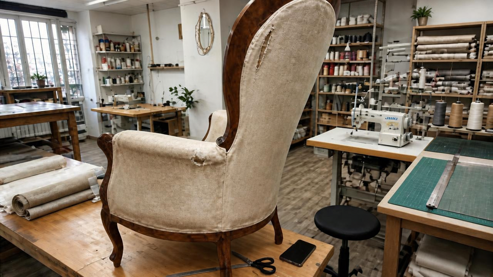
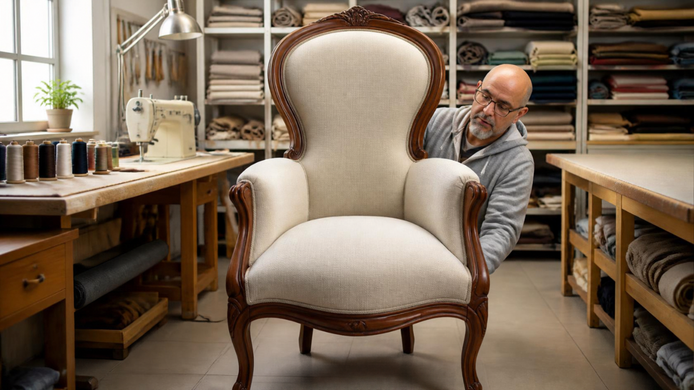
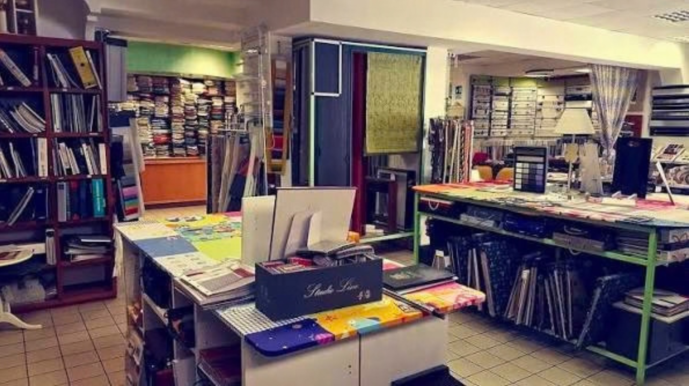

Diamo nuova vita ai tuoi imbottiti con lavorazioni artigianali su misura, vasta scelta di tessuti antimacchia, pelli e velluti. Dal ritiro a domicilio alla consegna del lavoro finito.
Ogni divano o poltrona viene lavorato a mano dai nostri maestri tappezzieri nel laboratorio di Via Tozzi.
Vasta scelta di tessuti antimacchia, pelli, velluti e filati d'arredo visionabili in entrambe le sedi.
Ci occupiamo del ritiro del mobile direttamente a casa tua in tutta Roma e della riconsegna a lavoro finito.



La reputazione e la soddisfazione di chi si è affidato alla sartoria Piattelli a Roma.
"Hanno rinfoderato il divano di famiglia a cui tenevamo moltissimo. Lavoro di sartoria eccellente con velluto antimacchia, sembra appena uscito dalla fabbrica!"
Paola G. — Roma Prati"Inviato la foto della mia poltrona vintage su WhatsApp e ricevuto subito una stima precisa. Servizio di ritiro a casa e riconsegna impeccabile."
Claudio B. — Roma Centro Storico"Miglior laboratorio di tappezzeria a Roma. Abbiamo fatto rifare 6 sedie d'epoca e i tendaggi del salone: cura del dettaglio davvero d'altri tempi."
Valeria M. — Roma Parioli Showroom & Rappresentanza
Showroom & Rappresentanza
📍 Roma (Zona Prati / Centro)
Atelier al centro di Roma ideale per consulenze d'arredo riservate, selezione tessuti d'alta gamma e coordinamento tendaggi.
 Laboratorio Artigianale & Confezione
Laboratorio Artigianale & Confezione
📍 Roma
La sede operativa principale dove i nostri tappezzieri e sartine eseguono il restauro di imbottiti e la confezione su misura.